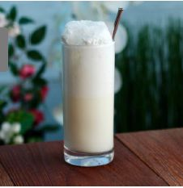

O Gin Fizz é um cocktail refrescante e efervescente que combina a botanicalidade do gin com a acidez do limão e a efervescência da água com gás.
Método de Preparo
Nota: Servir sem gelo. GuarniçãoDecore com uma fatia de limão e, opcionalmente, casca de limão. |
 |
Por volta de 1750, nasceu o Gin Fizz, um cocktail que se tornaria uma das bebidas mais populares do mundo. Naquela época, os marinheiros eram os mais afetados pela deficiência de vitamina C e escorbuto, uma doença potencialmente fatal. O Almirante Nelson teve a ideia de misturar gin com limão para ajudar a prevenir a doença entre os seus homens.